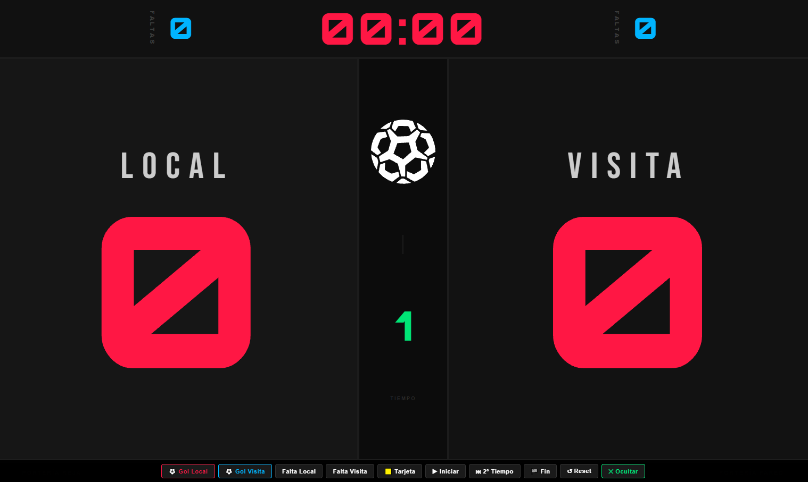
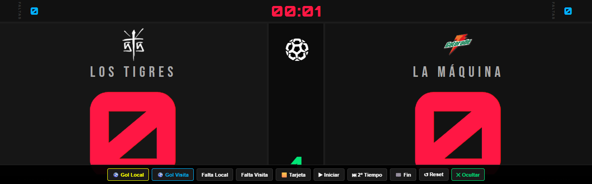
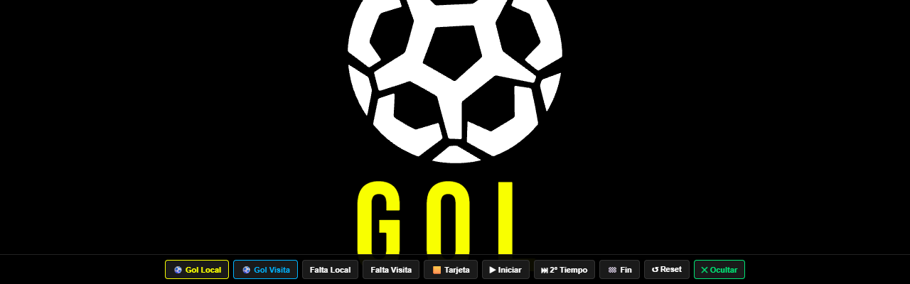
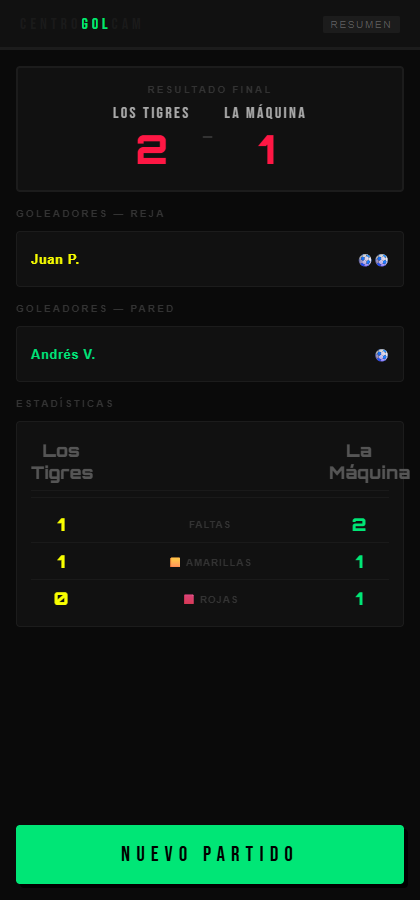
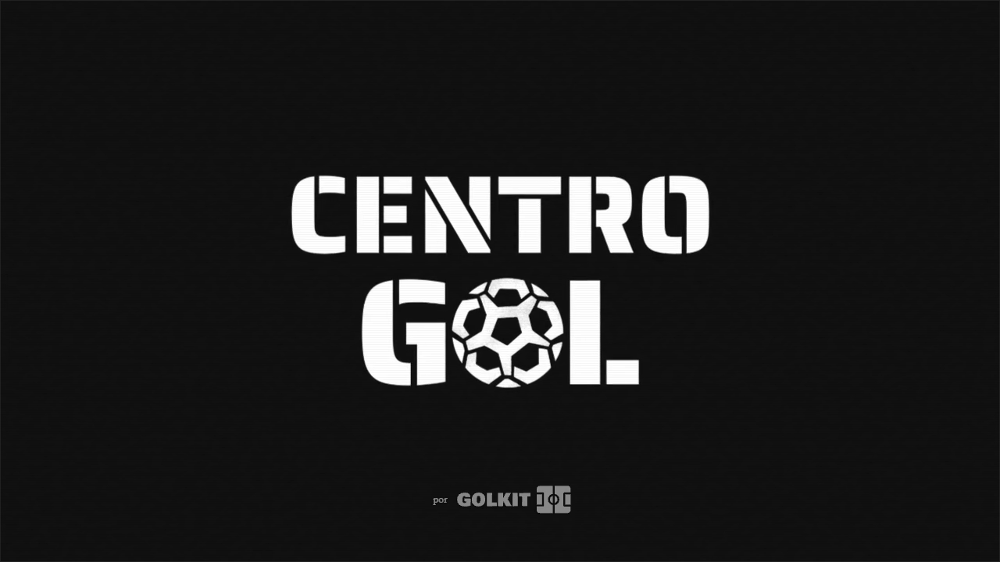

Centro Gol runs a five-a-side pitch that films every match on a security DVR nobody ever reviews. Golcam turns that raw feed into the one thing players actually want: their goal, branded, delivered to the group chat before the celebration is even over.
I built the product end to end — the referee's on-court app that triggers a capture, the server that pulls the clip from the DVR, and the branding pass that stamps it with a custom watermark sequence before it ships to WhatsApp automatically. On the design side, I directed the visual language for the on-court scoreboard players read mid-match: brutalist, high-contrast, legible from across the pitch under afternoon sun — built around Golcam's own institutional palette of signal green, alert red and near-black.
The clip pipeline (GolCam) has been running in production at Centro Gol since 2025. A companion live ScoreBoard and referee app — full match state, fouls, cards, a real-time link between the ref's phone and the courtside monitor over WebSockets — is in active development as the next stage of the system.
It's the project I point to when someone asks what "creative technologist" actually means in practice: the same instinct for structure and legibility that goes into a brand system, applied to a pipeline that has to run itself, unattended, every single match.




